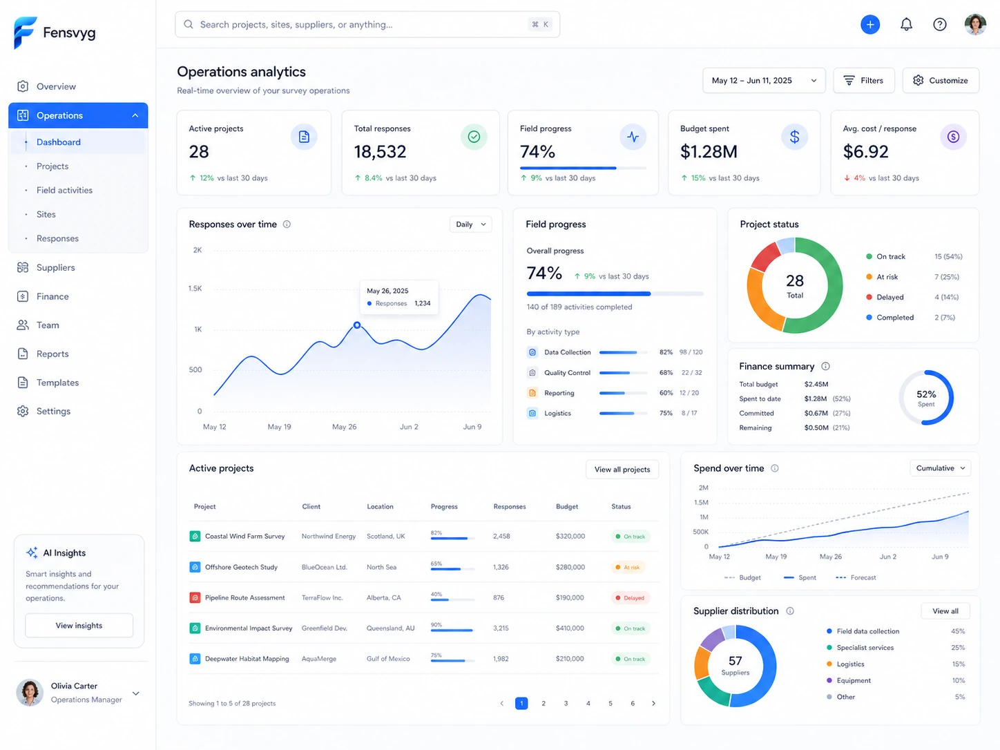

Survey management admin
Manage customers, suppliers, employees, departments, roles, wallets, rules and project permissions from one backend.
Fensvyg brings project setup, supplier distribution, callback control, wallet logs and settlement into one focused SaaS platform — without spreadsheets, fragmented chats or blind handoffs.

A calm, structured product layer for teams that manage traffic, suppliers, members, rules, finance and customer callbacks every day.
Manage customers, suppliers, employees, departments, roles, wallets, rules and project permissions from one backend.
Give suppliers a dedicated portal for project lists, member groups, quality logs, wallets and settlement records.
Track visitor access, device signals, quota status, completes, rejects, project progress and financial activity.
Configure redirect rules, callback URLs, encrypted signatures, HMAC validation and automated workflow events.
Keep wallet movement, pending funds, project bills, supplier invoices and internal audit notes traceable.
Support custom domains, SMS, email, CDN, cloud storage, DNS records and secure environment configuration.
A simple operational path: configure the project, route supplier traffic, watch quality signals, then close financial records.
Set CPI, audience, country, quota, IR/LOI, redirect conditions and supplier rules.
Distribute traffic, configure access logic, callback rules, redirect URLs and whitelist controls.
Review completes, rejects, device signals, project status, quota pressure and abnormal access logs.
Review wallets, pending funds, supplier bills, employee logs and settlement notes.
Large interface previews help buyers understand the operational flow before they book a demo or involve technical stakeholders.
All cards use the same visual language. The selected edition is highlighted with a subtle motion border instead of a disruptive dark block.
For small research teams running internal survey projects.
For companies managing suppliers and distributed fieldwork traffic.
For teams that need backend, supplier portal and survey station in one connected workflow.
For enterprise teams with infrastructure, compliance or custom integration needs.
Three customer-style scenarios showing how fieldwork, supplier and global research teams can benefit from a cleaner operating layer.
“Our project team can see supplier distribution, quota status and settlement notes in one place. We no longer chase updates across several chat groups.”
“The supplier portal gives every partner a clear entry point while our head office still controls access rules, wallet activity and project permissions.”
“Callback configuration and financial logs help our global team explain exactly what happened on a project without digging through disconnected tools.”
Yes. The product can present backend management, supplier operations and survey station workflows as a connected operating layer.
Yes. The platform content references custom domain, DNS, cloud storage, CDN, SMS, email and private deployment configuration.
Yes. The page supports English, Hindi and Chinese switching so sales teams can present the product story to India and overseas buyers.
After a product walkthrough, the team can map required portals, roles, callback rules, domain setup and deployment scope into an implementation plan.
Show buyers a calm, credible SaaS experience — built around your real product screens, your workflows and your sales story.